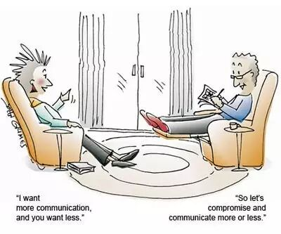
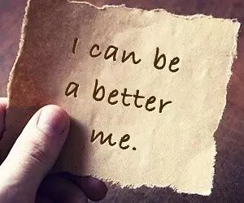
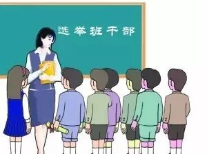

Time: 19:30-21:30, Friday,June 17.
Venue: Room B208, New Main Building, Beihang University.
Table topic part-Compromise
Toastmaster: Kiki
Table Topic Master: Joshua

Once upon a time. An old man was talking with a young man.
"What is marriage, young man? What do you know about marriage?"
The young man was very confused at that time, few days ago he just broke up with his girlfriend and he heard that the old man had never been married in his whole life.
"Marriage? I am not sure. Is it about Love? A vow? Or Passion?"
The old man looked at him for a while and said: "No. I think its about compromise."
For many years I don’t believe there is a clear answer to what is marriage kind of question. But I do believe that compromise plays an interesting role in our lives, whether you are going to admit it or not.
What if we can choose our ideal to be our career, enjoy it and live on it until the last minute of our life?
What if decisions we make can always satisfy everyone around us and no one get disappointed?
What if we can meet the right ones at the right time when we are perfectly prepared, and they loves us as much as we love them?
What if after we experienced a crazy world full of coins, greed, jealous, addiction, and still expect to leave ourselves a pure heart?
... ...
Unfortunately, I guess we cannot.
Whenever we are struggling with choices in front of us.
We need to make compromise. We need to find out what should we let go, even something we feel a part of us.
We also need to understand that compromise means much more than giving up, it can also means wisdom, power, love, persistence etc.
Compromise is an art, on this Friday, we talk about compromise and really look forward to your own story about it.
Prepared speech part (CC)
Qiqi (CC3)---My Love Story
When we talk about love, we talk about the sweet pure romantic and best thing in the world. When we talk about love story, I can only be a good listener, for my story is about finding. How about Qiqi’s love story? (I’m 琪琪 not Qiqi, we are different). I don’t believe you are not interested in it.
Vance (CC7)---Make It Better

“It is good enough.” “But it can be better.” As a Virgo, I don’t believe something can be made best, but it must can be made better. Vance is a Leo, but he is also a perfectionist. To make it better, to be a better Vance.
New Officers Election

This Friday night, Beihang TMC will hold the new officers election. All the positions are open to all members. If you are passionate responsible and easy going, you are wecomed to be a officer of our club.
What is Toastmasters?
Toastmasters International (TI) is a nonprofit educational organization that operates clubs worldwide for thepurpose of helping members improve their communication, public speaking, and leadership skills.
You can find us by the following map of Beihang University.
Any questions call Kiki:15652932538

https://mp.weixin.qq.com/s/JGKemBUmH3cbHxMceX_RkA
本页为抢救式本地归档，图文已永久保存。